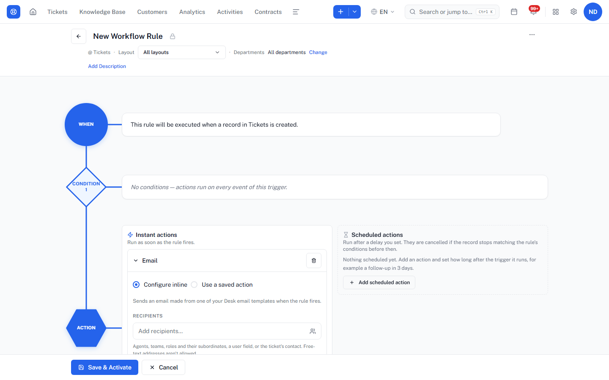
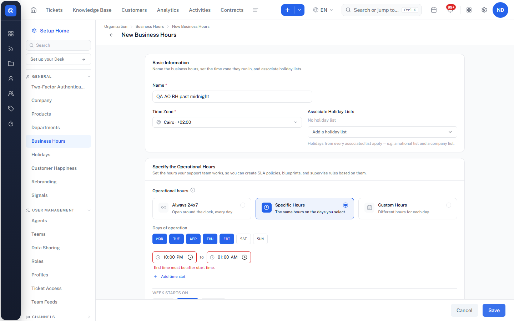
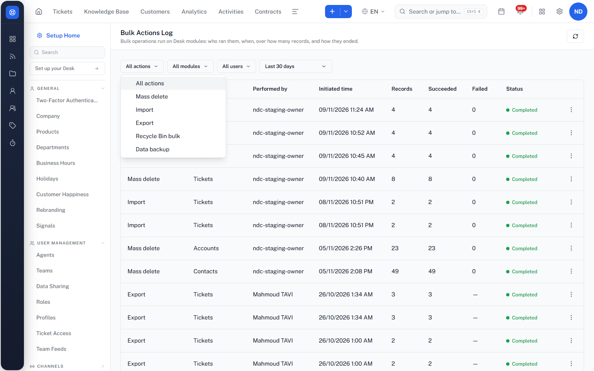
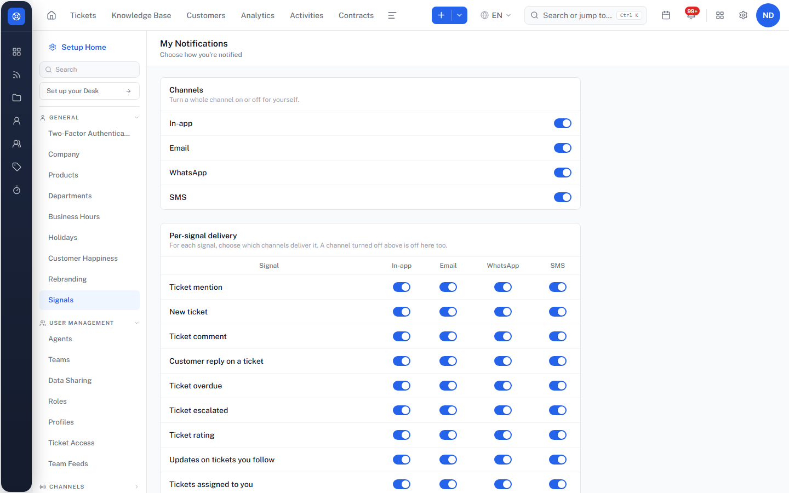

Desk automation order: status and findings
TAVI Desk on NDC-Staging, compared with Zoho Desk. 8–9 Nov 2026. Local report, not published. Nothing has been filed in Plane yet.
44 / 67
SLA rows run
21 / 30
Notification rows run
15
Missing-list items confirmed so far, 1 image built
64
QA Team 1 / Dev Team 2 tickets deleted
Open check: the "Tickets from Mail" blueprint. While opening a transition on this published blueprint (Customer Support), a click landed on a "+" and added an unsaved parallel transition. Nothing was saved or published, and the browser was closed. A fresh load before the network dropped showed no issue banner and no extra transition, but the last load came back blank. It will be confirmed again as soon as TAVI loads reliably.
1. SLA (44 of 67 rows run)
| Result | Count | Rows |
|---|---|---|
| Pass | 38 | SL-01–04, 06–11, 13, 14, 19, 23–26, 28, 31–37, 39, 41, 43, 45, 47–50, 52, 56, 59, 63, 66. Some are partial: SL-07 (comment scope only), SL-39 (valid contract only), SL-43 (views exist only). |
| Fail | 2 | SL-12: no number or date operators in target conditions. SL-30: with Create + Update, an update doesn't restart the SLA (Zoho says it should; live Zoho not checked). |
| Finding | 3 | SL-17: Business mode with no hours saves through the API, and the ticket gets no SLA. SL-21: agents who can't see the ticket are skipped (no_access), shown only in the feed. SL-54: a "before due" reminder longer than the target still saves. |
| API only | 1 | SL-05. |
| Blocked | 5 | SL-15, 16, 20, 53, 65: business hours need the owner. Owner sign-in is now allowed, but these haven't been run yet. |
| Not run | 18 | SL-18, 22, 27, 29, 38, 40, 42, 44, 46, 51, 55, 57, 58, 60, 61, 62, 64, 67. Also E2E, Group Z and the live Zoho checks. |
2. Notifications (21 of 30 rows run)
| Result | Count | Rows |
|---|---|---|
| Pass | 17 | NT-01, 02, 03, 05, 08, 11, 12, 13, 14, 15, 18, 20, 21, 25, 27, 28, 29. Several cover only part of the row. |
| Finding | 4 | NT-16, NT-07 (both from your Gmail, below), NT-04 (an agent notice still fired right after the rule was switched off; stopped within 60 seconds), NT-23 (closing through the record API sends no closed mail). |
| Blocked | 2 | NT-19: you've said yes; not run yet. NT-22: needs the owner; not run yet. |
| Not run | 7 | NT-06, 09, 10, 17, 24, 26, 30. |
What your Gmail screenshot showed
| Row | Ticket | Expected | Seen | Result |
|---|---|---|---|---|
| SL-21 | #1493 | SLA escalation mail | "Update on your ticket #1493" arrived | Pass |
| NT-05 (rules on) | #1546 | Comment mail and closed mail | Both arrived | Pass |
| NT-05b | #1673 | Comment added, edited and removed mails | "New comment" mail plus a 2-mail "Re:" thread | Pass |
| NT-07 | #1678 | "Added as CC" mail, then a closed mail to the CC | Only the "added" mail; no closed mail | Finding |
| NT-15c (inactive template) | #1679 | Tell me what arrives | Mail used the custom subject, with the number and subject filled in | Pass |
| NT-16 | between #1673 and #1678 | Closed mail using the bound custom template | No mail between those two in the inbox | Likely bug |
| NT-15c (active template) | likely #1680 | Closed mail with the custom subject | Above the part of the inbox in your screenshot | Unknown |
Still needed from you: the top of the inbox above #1679, and confirmation that Spam is empty.
3. Missing list for Plane (Zoho has it, TAVI doesn't)
Your four exclusions are removed (contact fields in criteria, AI owner suggestion, Zoho Cliq action, AI actions). Item 3 is off under your API-only rule, and item 26 is off because the bell @Mentions tab and Settings link work. Live Zoho mostly didn't load on this network, so most Zoho sides come from Zoho's help or API pages, and each image says so.
Confirmed in TAVI, with a Zoho source
| # | Missing in TAVI | TAVI today (seen 9 Nov) | Zoho source | Image |
|---|---|---|---|---|
| 6 | Workflow email alert to typed outside addresses | Email action: "Free-text addresses aren't allowed" | Workflow help: "Additional Recipients: enter the email addresses" | To build |
| 9 | Number and date operators in SLA target conditions | A number field offers only is, isn't, is empty, is not empty | SLA criteria API doc: is after, is before, between, not between | Built |
| 15 | Business hours past midnight | 22:00–01:00 refused: "End time must be after start time." Nothing saved. | Business hours help: "10:00 PM to 1:00 AM" example | To build |
| 16 | Widgets in a blueprint transition | The During tab has Fields, Checklist and Instructional message only | "A guide to integrate widgets in Blueprint" | Retake TAVI screenshot |
| 21 | "Assigning a blueprint transition" agent notification | No blueprint rule in the 37 rules | Notification rules help | To build |
| 22 | Contact "Receiving a reply" notification | Not in Contact Notifications | Notification rules help | To build |
| 23 | CC "Receiving a reply" notification | CC has only the acknowledgement | Notification rules help | To build |
| 24 | Separate call, task and event notification rules | One "activity" rule each for assigned, completed and mentioned | Notification rules help (9 separate rules) | To build |
| 25 | Notifications on or off per department | My Notifications has channels and signals, no department switch | Feeds help: agents can disable a department's notifications | To build |
| 27 | Custom function action in macros | 9 macro action types, none runs a custom function | Macros help: custom functions | To build |
| 28 | Reusing saved actions in macros | No saved-action picker in macros (workflows have one) | Macros help: new actions are kept and reusable | To build |
| 30 | Macro runs in the Bulk Actions Log | Action filter: Mass delete, Import, Export, Recycle Bin bulk, Data backup | Macro FAQ: check macro status in the action logs | To build |
| 31 | Supervisor rules (time-based automation) | Not in Setup › Automation | Supervisor rules help | To build |
| 32 | Automation Studio | Not in Setup | Automation Studio overview | To build |
| 33 | Schedules | Not in Setup | Schedules help | To build |
| 34 | Webhook list and API screens | Webhook only as a workflow action; no Webhooks or APIs in Setup | Webhooks help, API dashboard help | To build |
Dropped: built in TAVI after all
| # | Item | What TAVI has |
|---|---|---|
| 12 | Response Overdue and SLA Violated views | Both views exist (Response Overdue Tickets 9, SLA Violated Tickets 9) |
| 13 | SLA static report, Agent Performance SLA metrics | "SLA Tickets" static report; Agent Performance includes SLA |
| 14 | Contract expiry alert | "Contract Expiry Notification" section with "Whom to notify" and "Notify before (days)" |
| 29 | Apply a macro to many tickets | Ticket list › select › More › Macro |
Not confirmed: no Zoho help page backs them up
- 4 One workflow rule combining Create/Edit with Customer Reply: to drop. Zoho's own help says to pick one Execute On option, so Zoho doesn't do this either.
- 5 Workflow conditions on Name and To Address; 10 "Violations by hour" widget; 11 Countdown view; 17 public or private reply in a transition; 18 holiday list per blueprint state; 19 agent filter on the Blueprint dashboard; 20 saving a half-done transition. These need live Zoho, which isn't loading. Decision for you: keep trying, or leave them off this ticket.
Evidence so far





4. Housekeeping done today
- Deleted 64 tickets owned by QA Team 1 or Dev Team 2, out of 378 read, with no failures. 63 were named "QA …". One, #1310 "testxzxcsw12313", was not. The list is in
deleted-team-tickets-2026-11-09.json. - Signed in once each as the admin and the owner. Zoho used a saved session (the Zoho account itself asks for email verification).
- No changes in Zoho. One business-hours save attempt in TAVI was refused, so nothing was created.
5. Still open
- Confirm the "Tickets from Mail" blueprint is unchanged.
- Build the remaining 15 images, then a local Plane draft for your review. Filing settings: Bug, Medium, Desk, Sprint 15, assignees as on NDC-2811.
- Your decision on items 5, 10, 11, 17, 18, 19, 20.
- Gmail: the top of the inbox above #1679, and Spam.
- As the owner: SL-15, 16, 20, 53, 65, NT-22, and deleting the 19 stuck QA AO tickets in Dept A. Then NT-19, the remaining rows, live Zoho for SL-30, and the next features.